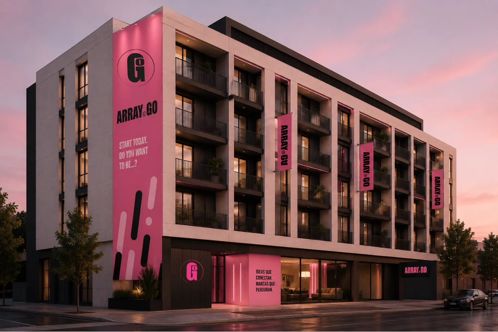
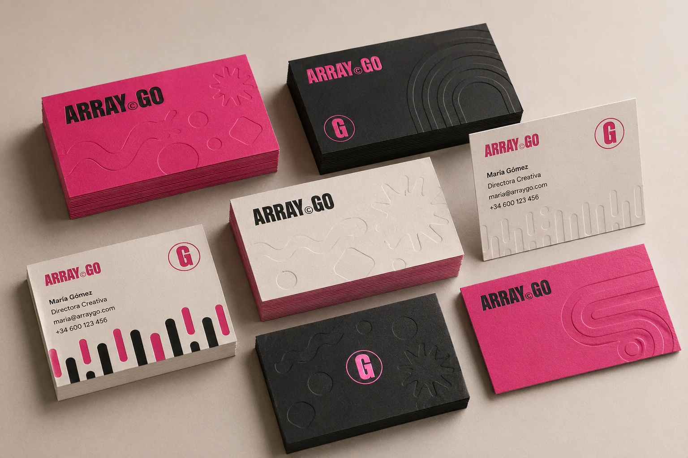
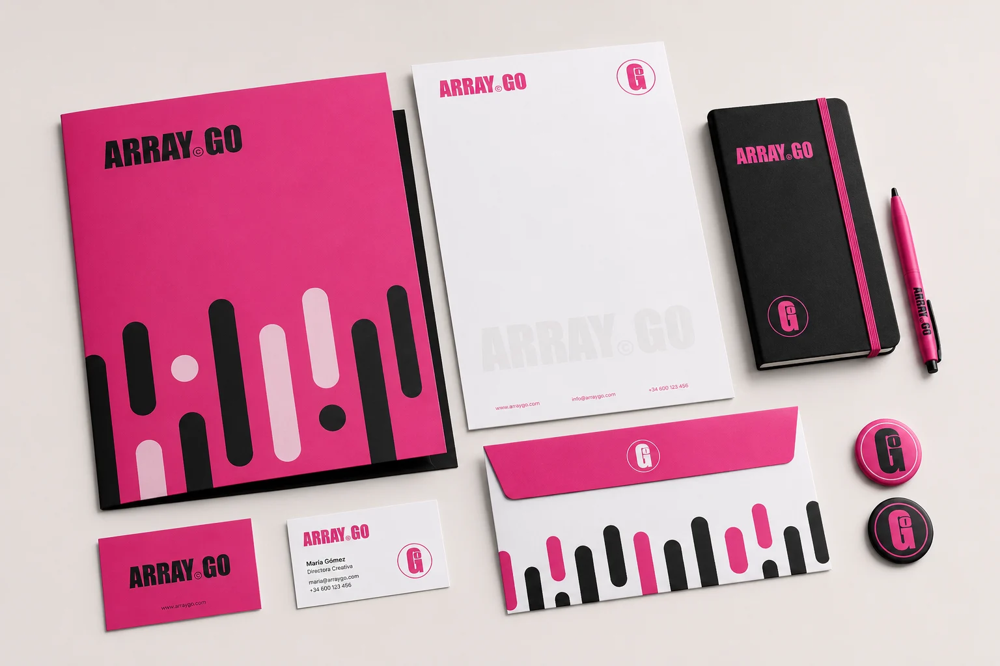
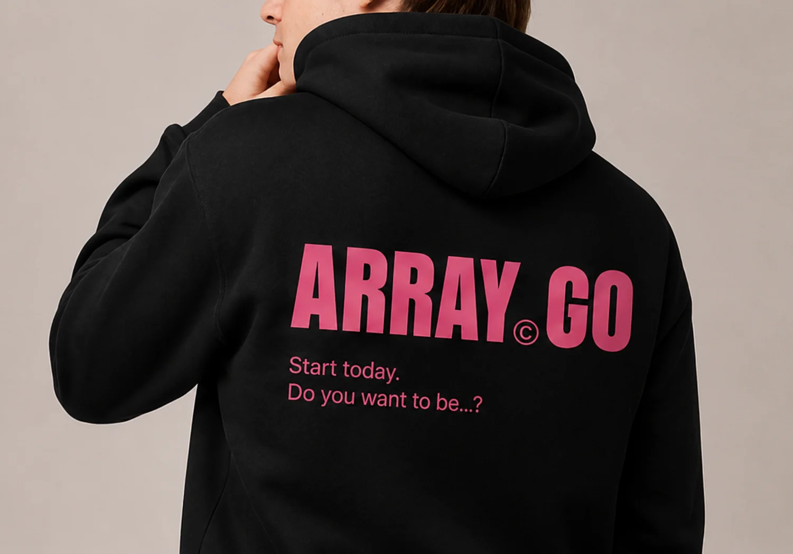
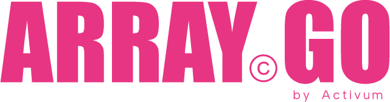

Identidad completa, papelería, merch y landing para ArrayGo Campus.
Full identity, stationery, merch and landing page for ArrayGo Campus.
- IdentidadIdentity
- PapeleríaStationery
- Merch
- Landing

- AñoYear
- 2026
- RolRole
- Identidad y landingIdentity and landing
- HerramientasTools
- Illustrator · InDesign · Canva · Claude · Vercel · GitHub
El retoThe challenge
ArrayGo Campus necesitaba una marca con energía, reconocible a distancia y fácil de llevar a papelería, merch, redes y web.ArrayGo Campus needed an energetic brand, recognisable from afar and easy to carry across stationery, merch, social and web.
TipografíaTypography
Paleta de colorColour palette
#F33283#FF80B4#FFADD7#000000#F9F9F9Recursos gráficosGraphic elements
Qué hiceWhat I did
Logotipo e isotipo, paleta de rosas con negro, sistema tipográfico, trama de barras, manual de marca y landing (Claude, Vercel y GitHub).Logo and icon, a pink-and-black palette, type system, bar pattern, brand guidelines and landing page (Claude, Vercel and GitHub).
ResultadoResult
Brand book de 27 páginas con aplicaciones en papelería, merchandising y redes sociales.A 27-page brand book with applications across stationery, merchandise and social media.





